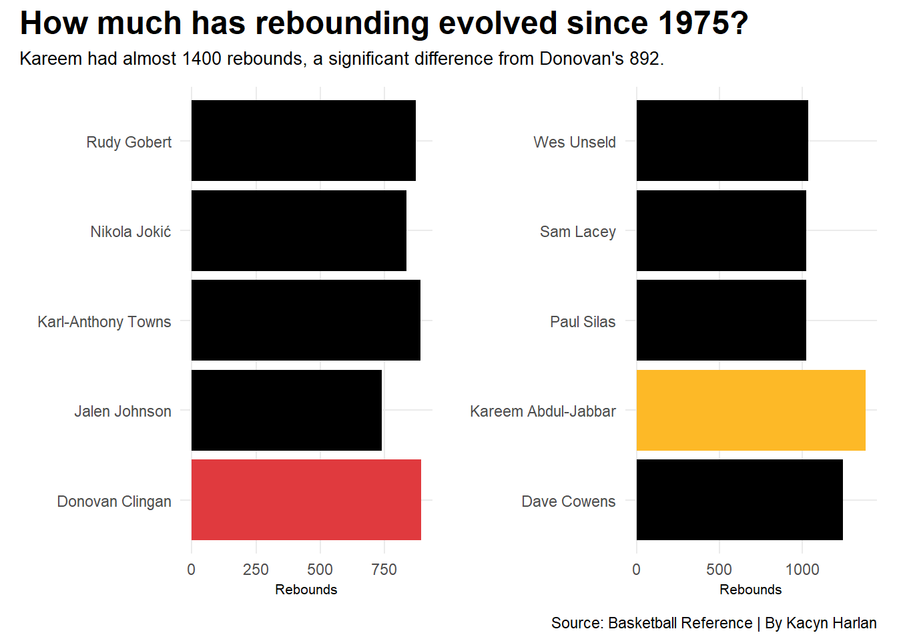

How NBA Centers have evolved over the last 50 years
basketball
nba
centers
Author
Kacyn Harlan
Published
November 13, 2026
Kareem Abdul-Jabbar is an NBA great and for good reason. He was a very versatile and shifty center and his signature shot, the skyhook, made him an offensive threat. You may not know him but your grandparents and parents sure do.
The NBA has changed significantly over the past 50 years. There have been many changes such as ruling, play-style and even the design of the basketball court. These charts look at how centers have changed over time, starting from the 70’s era.
Basketball Reference has a database of season stats from each year, going all the way back to 1950.
Back in the early era of the NBA, most centers and big men had to use their rebounding ability to grab boards on the offensive and defensive side. During that era, a lot of the centers during that time had season total rebounds of over a thousand with the lowest being around 740 total rebounds.
Let’s compare NBA centers from the 1975 era to the current era.
Code
library(tidyverse)library(gt)library(hoopR)library(patchwork)newcenters <-read_csv("centers2026.csv")oldcenters <-read_csv("centers1975.csv")threepoint <-read_csv("centers1985.csv")topreboundnew <-newcenters |>filter( TRB >738 )topreboundold <-oldcenters |>filter( TRB >1000 )dc <- topreboundnew |>filter(Player =="Donovan Clingan")kj <- topreboundold |>filter(Player =="Kareem Abdul-Jabbar" )bar1 <-ggplot()+geom_bar(data=topreboundnew,aes(x=Player, weight = TRB), fill ="black") +geom_bar(data=dc,aes(x=Player,weight = TRB), fill ="#E03A3E") +coord_flip() +labs(x="", y="Rebounds") +theme_minimal() bar2 <-ggplot()+geom_bar(data=topreboundold,aes(x=Player,weight = TRB), fill ="black") +geom_bar(data=kj,aes(x=Player,weight = TRB), fill ="#FDB927") +coord_flip() +labs(x="", y="Rebounds") +theme_minimal() bar1 + bar2 +plot_annotation(title="How much has rebounding evolved since 1975?", subtitle="Kareem had almost 1400 rebounds, a significant difference from Donovan's 892.", caption="Source: Basketball Reference | By Kacyn Harlan" )&theme(plot.title =element_text(size =18, face ="bold"),axis.title =element_text(size =8), plot.subtitle =element_text(size=10), panel.grid.minor =element_blank() )

Now during the current era, it caps off at about 900 and the lowest is about 570. A lot of teams today are more versatile and well-rounded, not really needing to rely on the big men as much.
But even then, you can see just how much that current centers have a good mix between offensive and defensive rebounding compared to 50 years ago.
When you think of centers you usually think of a dynamic big man who protects the rim and gets into dogfights going up for rebounds. Over time, play-style has changed and a lot of big men also shoot from beyond the arc.
Code
newtable <-newcenters |>group_by(Player) |>summarise(three_point_pct =`3P_pct` ) |>arrange(desc(three_point_pct))newtable |>gt() |>cols_label(three_point_pct ="Three Point Percentage" ) |>tab_header(title ="How much has the three point changed the game?",subtitle ="Current season stats show that many centers typically like to shoot the three ball. " ) |>tab_style(style =cell_text(color ="black", weight ="bold", align ="left"),locations =cells_title("title") ) |>tab_style(style =cell_text(color ="black", align ="left"),locations =cells_title("subtitle") )
How much has the three point changed the game?
Current season stats show that many centers typically like to shoot the three ball.
Player
Three Point Percentage
Moussa Diabaté
0.500
Kel'el Ware
0.395
Nikola Jokić
0.380
Karl-Anthony Towns
0.368
Chet Holmgren
0.362
Jalen Johnson
0.352
Victor Wembanyama
0.349
Donovan Clingan
0.341
Wendell Carter Jr.
0.319
Bam Adebayo
0.318
Alperen Şengün
0.305
Paolo Banchero
0.305
Scottie Barnes
0.304
Evan Mobley
0.297
Derik Queen
0.261
Amen Thompson
0.216
Neemias Queta
0.125
Rudy Gobert
0.000
Deandre Ayton
NA
Jalen Duren
NA
This is a slight change from when the three point line was first implemented in the 1980s. During the 1985 season, it wasn’t typical for a big man to shoot from beyond the arc, but a handful of them did do it. Larry Bird was at the top with a .423 three point percentage. In the 2025 season, we have Moussa Diabaté with a .500 percentage.
With this table, a lot of the centers from the 1985 season did not attempt the three point, or rarely did so. In the 2025 era, only about three centers didn’t attempt or rarely do so.
Code
threeptcenter <-threepoint |>group_by(Player) |>summarise(three_point_pct =`3P_pct` ) |>arrange(desc(three_point_pct))threeptcenter |>gt() |>cols_label(three_point_pct ="Three Point Percentage" ) |>tab_header(title ="How much has the three point changed the game?",subtitle ="This table shows about 5 seasons after the implementation of the three point line. Most of the centers in this era either didn't attempt or rarely attempted shooting beyond the arc." ) |>tab_style(style =cell_text(color ="black", weight ="bold", align ="left"),locations =cells_title("title") ) |>tab_style(style =cell_text(color ="black", align ="left"),locations =cells_title("subtitle") )
How much has the three point changed the game?
This table shows about 5 seasons after the implementation of the three point line. Most of the centers in this era either didn't attempt or rarely attempted shooting beyond the arc.
Player
Three Point Percentage
Larry Bird
0.423
Sam Perkins
0.333
Bill Laimbeer
0.286
Cliff Robinson
0.250
Charles Barkley
0.227
Ralph Sampson
0.133
Herb Williams
0.083
Buck Williams
0.000
Jack Sikma
0.000
Joe Barry Carroll
0.000
Karl Malone
0.000
Kevin Willis
0.000
LaSalle Thompson
0.000
Larry Smith
0.000
Moses Malone
0.000
Terry Cummings
0.000
Hakeem Olajuwon
NA
James Donaldson
NA
Mark Eaton
NA
Robert Parish
NA
Besides looking at statistics from beyond the arc, many centers used to be defined by raw size, rebounding, and dominance in the post. Nowadays, a lot of centers can be more versatile and shifty, sometimes even playmaking beyond the post.
With the always evolving league and introduction of new, taller and versatile centers, it’s no doubt that these numbers will constantly be changing over time.